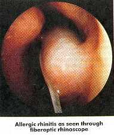
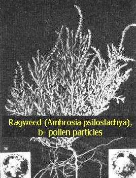
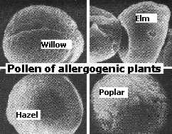
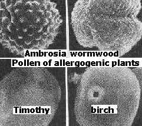
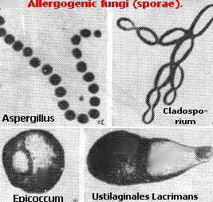
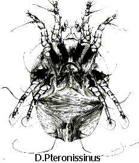
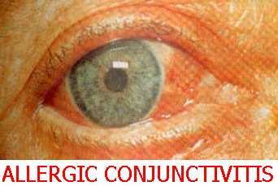
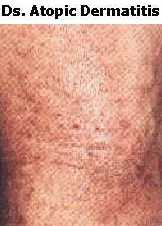
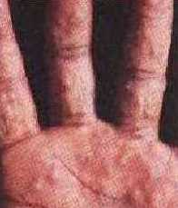

LOCAL FORMS OF ANAPHYLAXIS
Local anaphylaxis reactions are exemplified by so-called atopic allergy. The term "atopy" implies a genetically controlled predisposition to develop localized anaphylactic reactions to inhaled or ingested allergens. About 10% of the population suffers from allergies involving localized anaphylactic reactions to extrinsic allergens, such as pollen, animal dander, house dust, fish, and mites. Of interest is the familial predisposition to the development of this type of allergy. A positive family history of allergy is found in 50% of atopic individuals. The mode of inheritance of unclear, but it is most likely multifactorial (see above).
Pollinosis – or local anaphylaxis caused by inhalation of plant
pollen (masculine hametes of plants) is one of the most common atopic diseases. 
Not any kind of pollen is able to trigger pollinosis. The experience of St. Mary’s Hospital (London, UK) has shown, that among more than 3000 of pollinosis patients treated for the period of 2 years, more than 90% had the allergy towards the pollen of 9 different gramineous grasses (or Gramineae), and no one was affected by pollen of nettle or plantain. In Belgium only 27 grasses and trees are registered as possible reasons of pollinoses.

In Middle Europe the most common provocateurs of pollinosis are rye grass (Arrhenatherum elatius), timothy grass also known as cat’s tail grass (Phleum pratense), black grass (Alopecurus myosuroides), wheat grass (Agropyrum), cock’s – foot (Dactylis glomerata), fescue grass (Festuca). In the Mediterranean region the leading offender is Parietaria, in Eastern Europe allergy to Poa is widely spread. In Japan anaphylactic patients suffer from the pollen of Japanese cedar.
 
If the attacks of anaphylactic rhinitis are not definitely seasonal, or prevail during cold season, when air is free from pollen allergens, and a patient stays much time indoors, it is appropriate to suggest allergy towards house dust.
The house dust is not a single allergen, but complex term for designation of different ones. Some of the patients with “all year round rhinitis” are allergic against domestic pet dander (cat’s and dog’s wool, canaries feathers), against Arthropoda (sublimated aquarium fish feed consisting of Crustaceae; clothes moth; domestic cockroaches and their feces). The American cockroach (Periplaneta americana) is blamed for allergy much more often than German one (Blattella germanica). In USA frequent allergens, especially for the region of Great Lakes, are Trichoptera and Ephemeroptera.

In ophthalmology well known disease is demodecosis - severe and prolonged allergic blepharitis caused in atopic patients by microscopic keratophage – cat’s follicle or dog’s follicle mite (Demodex). But all these Arthropoda, except maybe American cockroach, provoke anaphylaxis relatively rare.

The mite can be found in carpets, books, cushions and mattresses witin dust. Not only imago itself, but also its feces can cause allergy. The mite excrements contain the concentrate of its main antigen P and, due to small particle diameter may penetrate deeply into respiratory tract, which is not possible for imago itself. Of practical significance is the fact that mite is resistant to insecticides, but sensitive to frost. In Russia and Scandinavian countries during cold season people traditionally clean the carpets with frosty snow, which may render some “hypoallergenic” action on domestic environment.
Great troubles in an anaphylactic individual may be caused by ingestant allergens. This phenomenon is a basis for food allergy. It is not easy to evaluate exactly its real incidence, because the symptoms of alimentary allergy are less definite, than for pollinoses. The manifestations may include hives or angioedema, occurring rapidly after consumption of some food. But, most typical for food allergy stomachache and diarrhea are not specific and may be resulted from infections as well. If a person is food-intolerant, it does not necessarily imply alimentary allergy, but may be also observed in inborn metabolic errors, like alactasia.
An interesting observation of food allergy was reported by P. Busseret
(1977), who has described several patients for 30 years treated by combination of an
aspirin analogue and sulfanilamide for “chronic colitis”. Due to occasional mistake of
a nurse, it has been revealed, that aspirin analogue alone is equally effective. Moreover,
later it has been demonstrated that prostaglandins liberated from bowel mast cells were
responsible for this allergic colitis, prevented by aspirin taking before meals. 
It is worth to mention, that food allergy may imply non-anaphylactic mechanisms also: immune complex, cytotoxic and that of delayed hypersensitivity. For example, food sensitization with cow milk albumin in neonatal period may cause later, in some MHC D3/D4 positive individuals, progressive autoimmune cytotoxic insulitis, resulting in insulin-dependant diabetes mellitus.
 
The spectrum of anaphylaxis is very broad. There are anaphylactic reagin-dependant forms of migraine and stenocardia, caused by allergic triggering of vasospastic and thrombogenic leukotrienes and tromboxanes. Anyway, anaphylaxis is always brought in by alien allergens. Only one case of autoallergic anaphylaxis was described in a women patient, who suffered from periodic hives. The disease was proven to result from IgE against patient’s self progesterone-binding protein, which level in blood fluctuates along the menstrual cycle. The lab diagnosis of anaphylaxis is helped by skin hive tests with proposed allergens, direct Shelly’s reaction (degranulation of reagin-sensitized mast cells by the offending allergen), and based on competitive radioimmunological principle tests: radioimmunosorbent test (RIST) or radioallergosorbent test (RAST). RIST gives the total serum IgE level and RAST – level of reaginic Ig towards concrete specific allergen. Both tests are possible also on enzyme-ligated immune sorbent basis, without radioactive match usage.
NEXT CHAPTER
OR